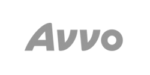

Work
-  Avvo's Ignite is cloud-based software that helps law firms market themselves and manage clients. I designed user flows and UI for new features.
-
 Facebook's Atlas is a digital advertising platform for brands and ad agencies. I helped their design team craft and prototype the UX prior to launch.
Facebook's Atlas is a digital advertising platform for brands and ad agencies. I helped their design team craft and prototype the UX prior to launch.
- GeoEngineers is an earth science and technology firm with 14 offices in the US. I did user research, UX design and prototyping of a new company intranet.
My clients range from early-stage startups to Fortune 100 companies. Industries served include e-commerce, education, entertainment, financial services, health care, science, social, software, and telecom.
Testimonial
Mark is a thoughtful and talented designer who does amazing work. […] He excels at solving complex design problems while doing what is right for the business…
— Kelly Franznick, Chief Experience Officer
Mark is an outstanding UX designer, able to take very complex problems and distill them into easy to use, intuitive flows…
— Vlad Siminel Andrei, Senior Product Manager
My engagements last two weeks to six months. I am based in Seattle, but my clients can be anywhere; Austin, Chicago, New York, San Francisco, Washington D.C., etc.
Contact
John Smith6920 Roosevelt Way NE
Suite 147
Seattle, WA 98115